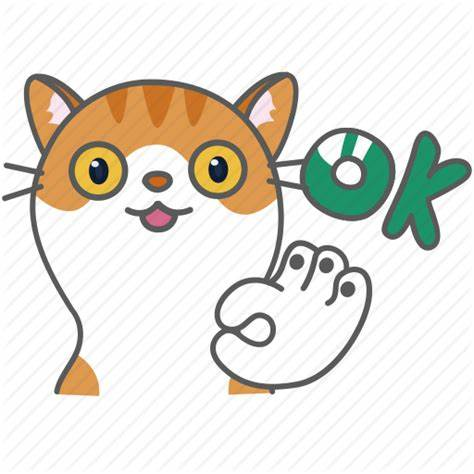

<!DOCTYPE html>
<html lang="en">
  <head>
    <meta charset="UTF-8" />
    <meta name="viewport" content="width=device-width, initial-scale=1.0" />
    <meta http-equiv="X-UA-Compatible" content="ie=edge" />
    <title>Render Props</title>
    <style type="text/css">
      .catImage {
        height: 80px;
        width: 80px;
      }
    </style>
  </head>
  <body>
    <div id="app"></div>

    <script src="https://cdn.jsdelivr.net/npm/react@16.13.0/umd/react.development.js"></script>
    <script src="https://cdn.jsdelivr.net/npm/react-dom@16.13.0/umd/react-dom.development.js"></script>
    <!-- <script src="https://cdn.jsdelivr.net/npm/@babel/standalone@7.8.6/babel.min.js"></script> -->
    <script src="https://cdn.jsdelivr.net/npm/@babel/standalone@7.9.5/babel.min.js"></script>
    <script type="text/babel">
      /// Use Render Props for Cross-Cutting Concerns

      // 定义一个组件，跟踪 WEB 应用程序中的鼠标位置
      // 在 Example03 的效果来看，依旧还未达到以可复用的方式真正封装行为的目标
      // 
      // render props：提供一个带有函数 prop 的 `<Mouse>` 组件，它能够动态决定什么需要渲染的，
      // 而不是将 `<Cat>` 硬编码到 `<Mouse>` 组件里，并有效地改变它的渲染结果。 
      class Cat extends React.Component {
        render() {
          const mouse = this.props.mouse
          return 
        }
      }

      class Mouse extends React.Component {
        constructor(props) {
          super(props)
          this.state = {
            x: 0,
            y: 0
          }
          this.handleMouseMove = this.handleMouseMove.bind(this)
        }

        handleMouseMove(e) {
          // +30 的目的是为了避免类似鼠标拖动图片的效果
          this.setState({
            x: e.clientX + 30,
            y: e.clientY + 30
          })
        }

        render() {
          return (
            <div style={{ height: "100%" }} onMouseMove={this.handleMouseMove}>
              {/* 
                Instead of providing a static representation of what <Mouse> renders,
                use the `render` prop to dynamically determine what to render. 
              */}
              { this.props.render(this.state)}
            </div>
          )
        }
      }

      class MouseTracker extends React.Component {
        render() {
          return (
            <div>
              <h1>Move the mouse around</h1>
              <Mouse render={ mouse => (
                <Cat mouse={ mouse } />
              )} />
            </div>
          )
        }
      }

      ReactDOM.render(<MouseTracker />, document.querySelector("#app"))

      // 提供了一个 `render` 方法让 `<Mouse>` 能够动态决定什么需要渲染，
      // 而不是克隆 `<Mouse>` 组件然后硬编码来解决特定的用例

      /// 更具体地说，render prop 是一个用于告知组件需要渲染什么内容的函数 prop.

    </script>
  </body>
</html>
